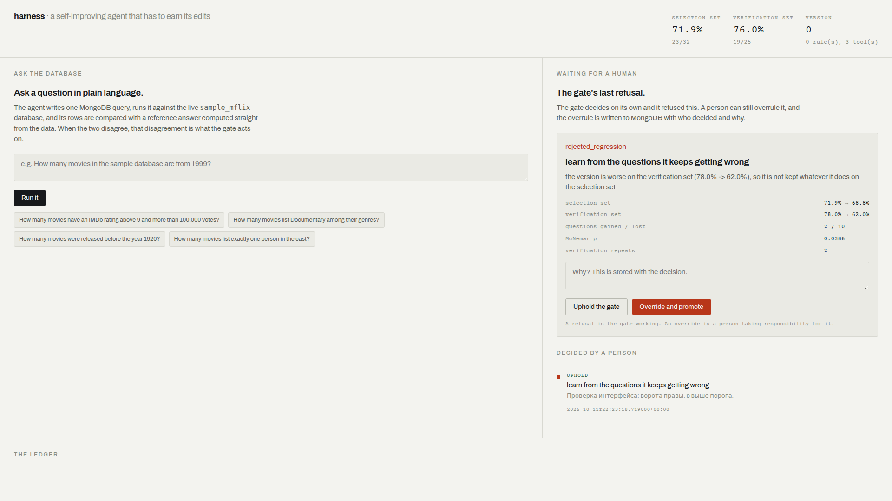
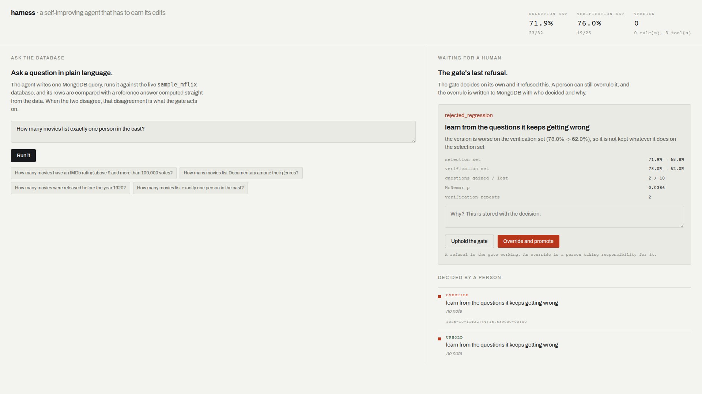
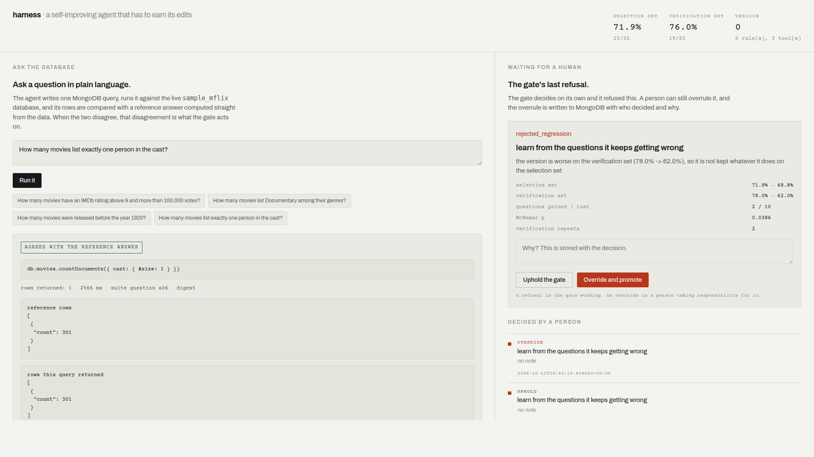

An agent answers questions about a MongoDB database in plain language. It also proposes changes to its own rules. A gate measures both versions on the same cases, decides whether the change made the agent better, and writes its verdict, with the reason, into the database. It refused all five proposals.
]) and the failure was recorded against the agent.
With the extraction fixed, the same version measures 75.0% and 80.0% on the same questions. The
agent did not improve; the measuring did, and it had been blaming the wrong side.
This is a captured run against the live cluster: the query the agent wrote, whether its rows matched the reference answer computed straight from the data, and how long it took.
Three moments from the running page: opening, a question typed in, and the answer. The gate's last refusal sits beside it with the arithmetic behind it, and a person can overrule it — that decision is written to MongoDB too.



The film questions were written by hand, which is no use to anyone with a different database. So the harness was pointed at a collection it had never seen — 1,564 theatres in the same cluster — and asked to write its own exam. It proposed questions with reference queries, ran every reference twice against the real collection, and threw away what did not survive: a question whose answer drifts between two runs cannot judge anything. Questions that the reference would have marked wrong for a field name the question never mentioned were made precise rather than dropped, because an exam that punishes a guess at the author's habits teaches the wrong thing.
The interactive version — where you can type a question and watch the query run against the cluster, and where the gate's refusals can be overruled — is at https://blend-repository-dee-auction.trycloudflare.com. It runs the application from the repository behind a tunnel; the address changes when the tunnel restarts, so the permanent URL is this page.
python -m web.app.
The gate and the instrument audit are separate modules: mh/gate.py,
mh/adapter.py, mh/ruler.py. Nothing in them knows about this
agent. A harness provides two methods — how it measures a version, and what it proposes —
and gets back a decision with a reason.